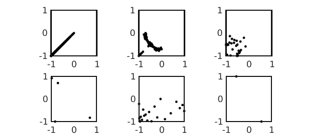
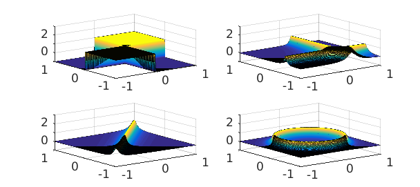
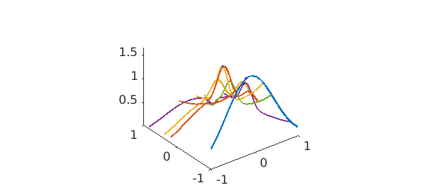

Pretty functions
Chebfun2 has half a dozen plotting commands such as plot, plot3, surf, surfc, mesh, and waterfall. In this example we use some of them to make pretty pictures.
Contour and pivot plot
The Chebfun2 contour command displays level curves and is analogous to the MATLAB contour command. On the other hand, the pivot plot, with syntax plot(f,'.'), displays the locations of the pivots used during the construction process. The number of pivots is equal to the rank of the chebfun2 object. Here are a selection of our favourite Chebfun2 contour plots along with the pivot locations that were selected during construction.
Six pretty functions:
f1 = @(x,y) 1./(1+100*(x.^2-y.^2).^2); F1 = chebfun2(f1); f2 = @(x,y) 1./(1+100*(.5-x.^2-y.^2).^2); F2 = chebfun2(f2); f3 = @(x,y) 1./(1+1e3*((x.^2-.25).^2.*(y.^2-.25).^2)); F3 = chebfun2(f3); f4 = @(x,y) cos(10*(x.^2+y)).*sin(10*(x+y.^2)); F4 = chebfun2(f4); f5 = @(x,y) real(airy(5*(x+y.^2)).*airy(-5*(x.^2+y.^2)));F5 = chebfun2(f5); f6 = @(x,y) tanh(10*x).*tanh(10*y)./tanh(10).^2+cos(5*x);F6 = chebfun2(f6);
Six pretty plots:
n = 500; MS = 'MarkerSize'; ms=10; d = [-1,1,-1,1]; subplot(2,3,1), contour(F1,'numpts',n), plot(F1,'.k',MS,ms), axis(d) subplot(2,3,2), contour(F2,'numpts',n), plot(F2,'.k',MS,ms), axis(d) subplot(2,3,3), contour(F3,'numpts',n), plot(F3,'.k',MS,ms), axis(d) subplot(2,3,4), contour(F4,'numpts',n), plot(F4,'.k',MS,ms), axis(d) subplot(2,3,5), contour(F5,'numpts',n), plot(F5,'.k',MS,ms), axis(d) subplot(2,3,6), contour(F6,'numpts',n), plot(F6,'.k',MS,ms), axis(d)

The plot command
The plot command can be used to visualise the surface of a chebfun2. The height of the surface above $(x,y)$ is equal to the value of $f(x,y)$. Here are four examples.
C=1000; g1=@(x,y) tanh(C*x)/tanh(C).*tanh(C*y)/tanh(C); G1 = chebfun2(g1); g2 = @(x,y) 1./(1+200*((x-.3).^2.*(y+.5).^2)); G2 = chebfun2(g2); g3 = @(x,y) 1./(1+100*(x - y).^2); G3 = chebfun2(g3); g4 = @(x,y) 1./(1+100*(.5 - x.^2 - y.^2).^2); G4 = chebfun2(g4); subplot(2,2,1), plot(G1), zlim([-1 3]) subplot(2,2,2), plot(G2), zlim([-1 3]) subplot(2,2,3), plot(G3), zlim([-1 3]) subplot(2,2,4), plot(G4), zlim([-1 3])

The waterfall command
The waterfall command displays the lines on which the function was sampled in order to form the chebfun2 approximant. The positions of the lines were calculated by the adaptive construction process. Here are Franke's function and the lines on which it was sampled to form an approximation.
h = @(x,y) .75*exp(-((9*x-2).^2 + (9*y-2).^2)/4) + ...
.75*exp(-((9*x+1).^2)/49 - (9*y+1)/10) + ...
.5*exp(-((9*x-7).^2 + (9*y-3).^2)/4) - ...
.2*exp(-(9*x-4).^2 - (9*y-7).^2);
H = chebfun2(h);
clf, waterfall(H,'-')

Phase portraits
For plots of complex valued functions see the Phase portraits example [1] and Section 1.7 of the Chebfun2 guide.
References
- Chebfun example complex/PhasePortraits